Universidad Anahuac Mexico
PORTAFOLIO DE EVIDENCIAS •
ENTREGA FINAL
Antecedentes y desarrollo de las series audiovisuales
Materia: Antecedentes y desarrollo de las series audiovisuales
Docente: Alicia Helena Hernandez Barba
Fecha de entrega: 6 de julio de 2026
Introducción
Este portafolio reúne 29 evidencias organizadas en seis bloques temáticos: política y poder, series clásicas, familia, amigos, trabajo y temas actuales. En cada una se analiza un episodio o fragmento a partir de su narrativa, sus personajes, sus recursos audiovisuales, su clasificación según Robert McKee y su lugar dentro de la evolución de las series televisivas.
El propósito del trabajo es mostrar cómo las series han cambiado en su forma de contar historias y representar conflictos relacionados con la familia, la amistad, el trabajo, el poder, la tecnología y la vida social. Además de describir cada caso, el portafolio busca reunir los principales aprendizajes de la materia y explicar de qué manera estas producciones generan emoción, tensión, humor, identificación y lectura crítica en el espectador.
ÍNDICE GENERAL
- The West Wing5
- House of Cards6
- It’s All Her Fault7
- The Newsroom8
- I Love Lucy10
- The Dick Van Dyke Show11
- The Untouchables12
- The Twilight Zone13
- Friends15
- Modern Family16
- This Is Us17
- Malcolm in the Middle18
- Married... with Children19
- Arrested Development20
- Bluey21
- 2 Broke Girls23
- Shrinking24
- Seinfeld25
- How I Met Your Mother26
- Ted Lasso: Rainbow28
- Ted Lasso: Sunflowers29
- ER (Urgencias)30
- The Pitt31
- Mindhunter32
- Law & Order: SVU33
- Mad Men34
- The Bear: Forks35
- Adolescence: Episode 337
- Black Mirror: Nosedive38
- Conclusión del portafolio39
- Reflexión personal sobre la materia40
- Fuentes consultadas41
SECCIÓN 01
Política, poder y medios
Análisis de la representación institucional, la veracidad y la ética del liderazgo público
The West Wing Evidencia 01
| Episodio Analizado | The Midterms (T2E03) | Año / País | 2000 / Estados Unidos |
|---|---|---|---|
| Creador(es) | Aaron Sorkin | Cadena / Plataforma | NBC / YouTube |
| Género | Drama político | Duración aprox. | 42 minutos |
2. Contextualización
Hito de la televisión de red de finales de los noventa. Relevancia: Elevó el diálogo sofisticado como motor dramático frente a la acción física tradicional en la TV abierta.
3. Síntesis
El Pdte. Bartlet confronta a la doctora Jenna Jacobs por su uso selectivo y dogmático de la religión para sostener discursos discriminatorios homofóbicos.
4. Análisis Narrativo
Conflicto moral y de jerarquía. Diálogos vertiginosos cargados de subtexto y datos duros. Puesta en escena: Bartlet de pie dominando físicamente la sala.
5. Clasificación McKee
Temas Actuales. Aborda la colisión entre fe privada y moral del Estado. Se cruza secundariamente con el entorno del Trabajo corporativo del gobierno.
6. Vinculación Materia
Televisión clásica de red. Muestra la sofisticación de la narrativa verbal de finales de siglo y la consolidación de la firma autoral del showrunner (Sorkin).
7. Reflexión Crítica
Un despliegue elocuente de poder moral. Bartlet demuestra que la inteligencia y la palabra son las armas políticas más potentes, idealizando la gobernanza norteamericana.
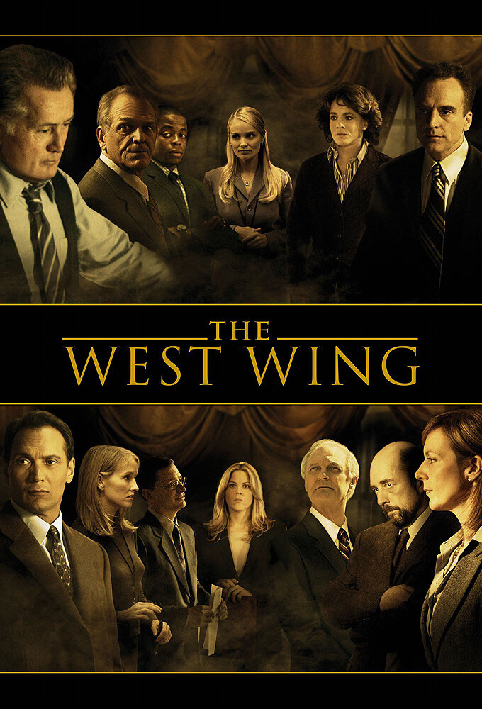
House of Cards Evidencia 02
| Episodio Analizado | Chapter 7 (T1E07) | Año / País | 2013 / Estados Unidos |
|---|---|---|---|
| Creador(es) | Beau Willimon | Cadena / Plataforma | Netflix |
| Género | Thriller político | Duración aprox. | 50 minutos |
2. Contextualización
Consolidó la era del streaming en 2013. Hito clave para la producción original de alta gama y la popularización del consumo por maratón (*binge-watching*).
3. Síntesis
En una recepción política, Frank Underwood ejecuta movimientos tácticos para aislar y desplazar visualmente al Vicepresidente de las decisiones clave.
4. Análisis Narrativo
Conflicto de pérdida de poder e influencia. Tono gélido e irónico. La puesta en escena utiliza la composición del encuadre para revelar las verdaderas jerarquías.
5. Clasificación McKee
Temas Actuales / Trabajo. Centrada en la desmedida ambición de poder institucional y los sacrificios éticos asociados a la supervivencia gubernamental.
6. Vinculación Materia
Ecosistema de streaming contemporáneo. Representa el tránsito de la emisión por parrilla lineal al consumo digital personalizado y sin censura de red.
7. Reflexión Crítica
Espectacular uso de la composición visual. El aislamiento político del vicepresidente se relata con silencios y encuadres, demostrando que la imagen supera a las palabras.
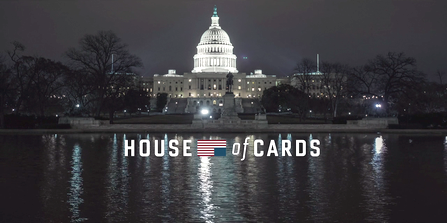
It's All Her Fault Evidencia 03
| Episodio Analizado | Episodio 1 | Año / País | 2025 / Estados Unidos - Australia |
|---|---|---|---|
| Creador(es) | Megan Gallagher | Cadena / Plataforma | Peacock / Prime Video |
| Género | Thriller de misterio | Duración aprox. | 50 minutos |
2. Contextualización
Estreno del thriller contemporáneo en streaming (2025). Explora la paranoia y la culpa en la maternidad hipervigilada moderna dentro de entornos acomodados.
3. Síntesis
Marissa acude a recoger a su hijo a una casa acordada para una cita de juegos, topándose con una mujer que desconoce por completo la situación.
4. Análisis Narrativo
Conflicto de misterio inmediato y supervivencia. Tono angustiante construido con planos de primer plano, silencios incómodos y música atmosférica opresiva.
5. Clasificación McKee
Temas Actuales / Familia. Analiza la vulnerabilidad infantil y el juicio social sobre la maternidad. El núcleo es el lazo biológico protector.
6. Vinculación Materia
Thriller contemporáneo de plataformas. Muestra el uso de recursos formales inmersivos y "ganchos" de tensión inmediata característicos del streaming.
7. Reflexión Crítica
Thriller tenso que convierte un miedo cotidiano en una pesadilla claustrofóbica. La culpa materna y la sospecha social se construyen con un ritmo de misterio implacable.
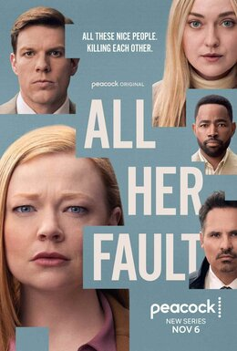
The Newsroom Evidencia 04
| Episodio Analizado | We Just Decided To (T1E01) | Año / País | 2012 / Estados Unidos |
|---|---|---|---|
| Creador(es) | Aaron Sorkin | Cadena / Plataforma | HBO |
| Género | Drama periodístico | Duración aprox. | 60 minutos |
2. Contextualización
Televisión de cable de prestigio (HBO). Presenta una idealización del periodismo ético y veraz frente a la polarización mediática contemporánea.
3. Síntesis
Will McAvoy rompe su habitual neutralidad complaciente y explota en un foro universitario revelando datos crudos sobre la realidad de su país.
4. Análisis Narrativo
Conflicto entre la complacencia mediática y la honestidad profesional. Diálogos sumamente técnicos y precisos. Puesta en escena teatralizada y solemne.
5. Clasificación McKee
Trabajo / Temas Actuales. El conflicto emana de la responsabilidad cívica y ética de la profesión informativa frente al público.
6. Vinculación Materia
Televisión de prestigio y cable premium. Drama institucional sorkiniano que debate el rol de los medios en la conformación de la opinión pública.
7. Reflexión Crítica
Una ruptura frontal de la complacencia mediática. Es un inicio valiente que critica el chovinismo e introduce el periodismo ético como control de la verdad pública.
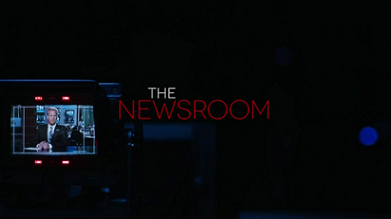
SECCIÓN 02
Series clásicas
Los cimientos formales: la sitcom, el drama procesal criminal y las antologías de autor
I Love Lucy Evidencia 05
| Episodio Analizado | The Girls Want to Go... | Año / País | 1951 / Estados Unidos |
|---|---|---|---|
| Creador(es) | Jess Oppenheimer, et al. | Cadena / Plataforma | CBS |
| Género | Sitcom Familiar | Duración aprox. | 26 minutos |
2. Contextualización
1951. Estandarizó el modelo de tres cámaras en cine frente al kinescopio directo, creando el modelo multicámara con público en vivo.
3. Síntesis
Lucy y Ethel planifican ir a un club nocturno por su aniversario, mientras que Ricky y Fred prefieren ir a ver una pelea de box.
4. Análisis Narrativo
Conflicto doméstico fundacional. Estructura de comedia de situaciones basada en el enredo. Actuación altamente física (slapstick) y gesticulada.
5. Clasificación McKee
Familia. El conflicto nace y se resuelve dentro de los linderos del acuerdo matrimonial y los roles de género tradicionales.
6. Vinculación Materia
Nacimiento de la Sitcom clásica de red. Define el uso de decorados de interior fijos y la comedia doméstica estructurada en 22 minutos.
7. Reflexión Crítica
Más interesante por su valor histórico que por su humor actual. Destaca cómo un conflicto cotidiano como una salida de pareja construye un enredo de amistad y matrimonio. Es clave para entender el origen de las sitcoms que le sucedieron.
The Dick Van Dyke Show Evidencia 06
| Episodio Analizado | The Sick Boy and the Sitter | Año / País | 1961 / Estados Unidos |
|---|---|---|---|
| Creador(es) | Carl Reiner | Cadena / Plataforma | CBS |
| Género | Sitcom Familiar / Laboral | Duración aprox. | 25 minutos |
2. Contextualización
1961. Renovó la comedia de situación al entrelazar el espacio del hogar moderno de los sesenta con la vida laboral de la escritura de televisión.
3. Síntesis
Rob y Laura dudan entre salir a un evento social o quedarse con su hijo Ritchie, quien asume estar enfermo con la niñera en casa.
4. Análisis Narrativo
Conflicto de rol familiar (parentalidad frente a ocio). Tono más sofisticado y realista. Mayor soltura y fluidez verbal de los actores en escena.
5. Clasificación McKee
Familia. Plantea el dilema cotidiano y la culpabilidad de los padres suburbanos, retratando dinámicas matrimoniales más modernas.
6. Vinculación Materia
Transición en la comedia de red. Muestra el desarrollo de personajes más humanos y el alejamiento progresivo del slapstick de los cincuenta.
7. Reflexión Crítica
Agradable y natural. Logra comedia desde un dilema cotidiano y creíble como la crianza y la culpa social, marcando la evolución formal del género en los sesenta.
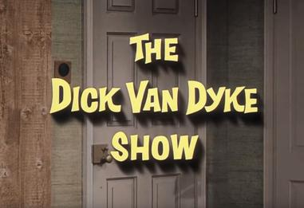
The Untouchables Evidencia 07
| Episodio Analizado | The Empty Chair (S1E01) | Año / País | 1959 / Estados Unidos |
|---|---|---|---|
| Creador(es) | Quinn Martin | Cadena / Plataforma | ABC |
| Género | Drama policial | Duración aprox. | 50 minutos |
2. Contextualización
1959. Referente del drama procesal de acción. Introdujo de manera inédita la estética sobria, sombría y cruda del cine negro de gánsteres a la TV.
3. Síntesis
Tras la caída de Capone, Ness y su equipo de "intocables" buscan bloquear el encumbramiento violento de un nuevo jefe de la mafia de Chicago.
4. Análisis Narrativo
Conflicto de moralidad y ley. Estructura procedimental seria con narrador de estilo documental. Puesta en escena de claroscuros y violencia velada.
5. Clasificación McKee
Trabajo. Se enfoca en la ética, la integridad y el deber profesional de los agentes ante la corrupción sistemática del entorno.
6. Vinculación Materia
Evolución del drama para audiencias maduras en la televisión clásica de red. Establece los cimientos del género policíaco televisivo.
7. Reflexión Crítica
Un drama policial serio, adulto y de gran atmósfera expresionista. Demuestra con sobriedad moral que la televisión clásica podía albergar relatos de crimen más complejos y cinematográficos.
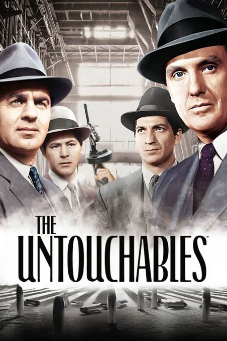
The Twilight Zone Evidencia 08
| Episodio Analizado | Where Is Everybody? (S1E01) | Año / País | 1959 / Estados Unidos |
|---|---|---|---|
| Creador(es) | Rod Serling | Cadena / Plataforma | CBS |
| Género | Antología / Suspense | Duración aprox. | 25 minutos |
2. Contextualización
1959. Serie pionera en usar la alegoría fantástico-científica para evadir la censura y discutir el miedo atómico y existencial de la Guerra Fría.
3. Síntesis
Un hombre amnésico vaga por un pueblo vacío; la privación sensorial y la total soledad desencadenan su colapso psicológico.
4. Análisis Narrativo
Conflicto psicológico absoluto del sujeto contra su propio aislamiento. Diálogos reducidos a monólogos. Puesta en escena claustrofóbica en exteriores desiertos.
5. Clasificación McKee
Temas Actuales. Aborda la angustia, el miedo existencial de posguerra, la soledad colectiva y la despersonalización del individuo moderno.
6. Vinculación Materia
Formato de antología clásica. Representa la capacidad de la TV para construir relatos alegóricos, autoconclusivos y profundamente políticos.
7. Reflexión Crítica
Brillante ejercicio de suspenso con recursos mínimos. Construye tensión desde el aislamiento y la soledad psicológica del individuo. Un clásico vigente que invita a seguir explorando antologías.
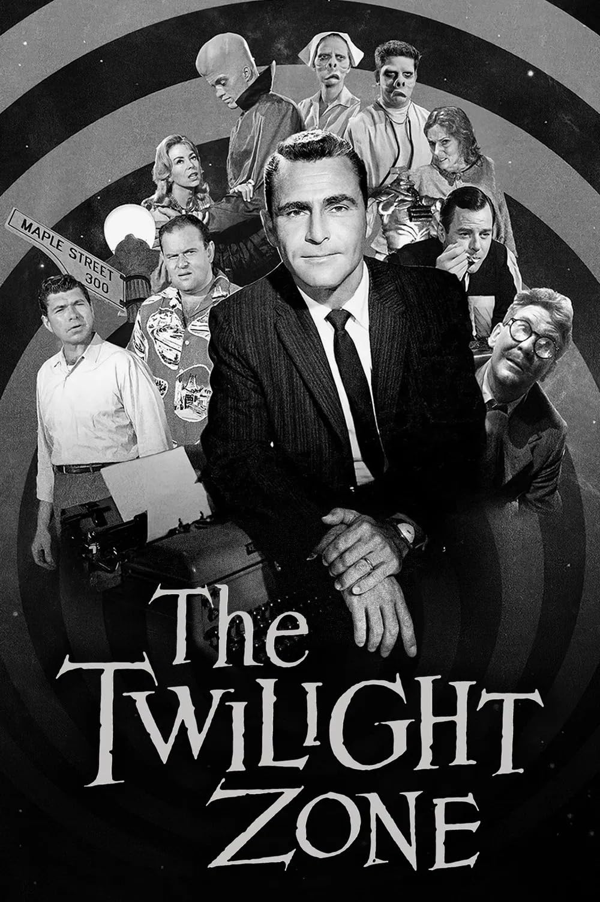
SECCIÓN 03
Familia
De la sitcom al drama: la representación del hogar, los estilos parentales y la disfunción como motor dramático
Friends Evidencia 09
| Episodio Analizado | The One Where Ross Got High | Año / País | 1999 / Estados Unidos |
|---|---|---|---|
| Creador(es) | David Crane, Marta Kauffman | Cadena / Plataforma | NBC |
| Género | Sitcom | Duración aprox. | 22 minutos |
2. Contextualización
Icono indiscutible de finales de los noventa. Hito en consolidar el paradigma de la "familia elegida" de pares urbanos en la TV comercial.
3. Síntesis
En el Día de Acción de Gracias, la acumulación cómica de mentiras cruzadas de Ross, Monica y Chandler estalla frente a los padres Geller.
4. Análisis Narrativo
Conflicto de secretos familiares en comedia de enredo. Diálogos rápidos y coreografiados. Puesta en escena teatralizada en un único interior.
5. Clasificación McKee
Amigos / Familia. Los pares asumen el soporte afectivo mutuo ante los conflictos de origen familiar directo de los miembros.
6. Vinculación Materia
Sitcom multicámara de la televisión clásica tardía. Representa la cumbre comercial del formato previo a la desfragmentación digital.
7. Reflexión Crítica
Una obra maestra del ritmo cómico. El conflicto de Acción de Gracias funciona por la perfecta definición de sus personajes, construyendo la familia elegida con maestría teatral.
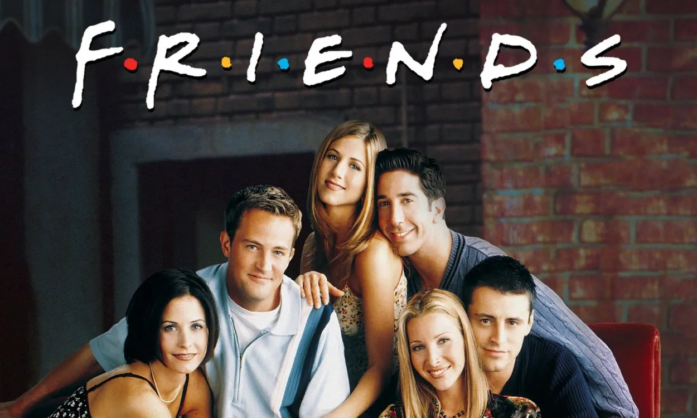
Modern Family Evidencia 10
| Episodio Analizado | Connection Lost (T6E16) | Año / País | 2015 / Estados Unidos |
|---|---|---|---|
| Creador(es) | Christopher Lloyd, Steven Levitan | Cadena / Plataforma | ABC |
| Género | Sitcom (Falso documental) | Duración aprox. | 22 minutos |
2. Contextualización
2015. Hito que actualizó la comedia de situaciones uniendo el formato de falso documental de cámara única con la vida tecnológica.
3. Síntesis
Todo el relato se traslada al escritorio de la Mac de Claire, quien intenta desesperadamente localizar a Haley mediante videollamadas y redes.
4. Análisis Narrativo
Conflicto de desencuentro tecnológico. Estructura experimental interactiva. Recursos visuales de interfaces digitales (Screenlife).
5. Clasificación McKee
Familia. El lazo afectivo materno-filial impulsa el desorden, evidenciando los miedos parentales y el control a distancia.
6. Vinculación Materia
Innovación formal de la Sitcom moderna. Hibridación genérica del falso documental y la narrativa transmedia digital.
7. Reflexión Crítica
Brillante y experimental. Trasladar la narrativa al plano digital de una laptop retrata con humor cómo la tecnología de red media y complica la comunicación familiar actual.
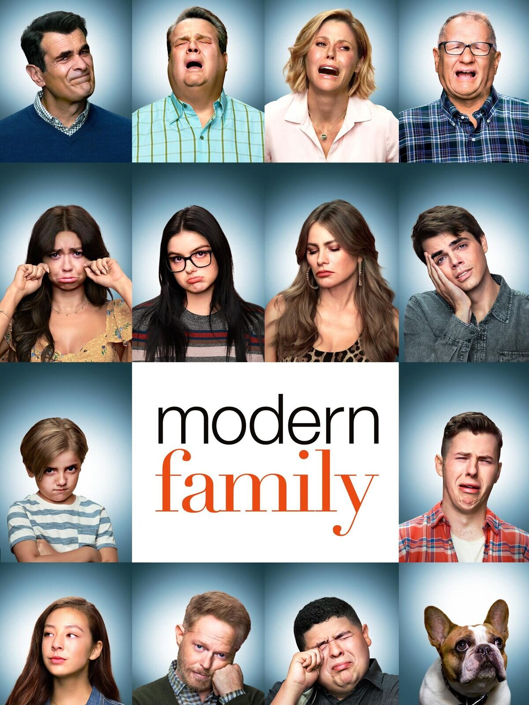
This Is Us Evidencia 11
| Episodio Analizado | Super Bowl Sunday (T2E14) | Año / País | 2018 / Estados Unidos |
|---|---|---|---|
| Creador(es) | Dan Fogelman | Cadena / Plataforma | NBC |
| Género | Drama familiar | Duración aprox. | 45 minutos |
2. Contextualización
2018. Renovó el melodrama de red abierta mediante un diseño sofisticado de saltos temporales que resignifican el trauma familiar.
3. Síntesis
La trágica y emotiva muerte de Jack Pearson tras el incendio familiar y las ramificaciones emocionales del duelo en Rebecca.
4. Análisis Narrativo
Conflicto del duelo y la pérdida irreparable. Estructura no lineal intercalando recuerdos. Tono solemne y emotivo (melodrama clásico).
5. Clasificación McKee
Familia. Justificación: Indaga el peso de la herencia emocional paterna y los traumas colectivos que unen o fracturan el núcleo.
6. Vinculación Materia
Drama familiar de prestigio en televisión abierta contemporánea. Uso del melodrama serializado como motor de engagement.
7. Reflexión Crítica
Un drama familiar sumamente catártico. Retrata el duelo con una contención digna, demostrando el impacto que la memoria ejerce en la identidad colectiva del núcleo familiar.
Malcolm in the Middle Evidencia 12
| Episodio Analizado | Bowling (T2E20) | Año / País | 2001 / Estados Unidos |
|---|---|---|---|
| Creador(es) | Linwood Boomer | Cadena / Plataforma | Fox |
| Género | Comedia familiar | Duración aprox. | 22 minutos |
2. Contextualización
2001. Revolucionó la comedia de inicio de siglo al suprimir las risas grabadas y usar el formato ágil de cámara única.
3. Síntesis
Estructura de universos alternos: la noche de Malcolm en el boliche cambia drásticamente si lo lleva Lois (control) o Hal (caos).
4. Análisis Narrativo
Conflicto de la autoridad parental. Estructura no lineal paralela de montaje cruzado. Cinismo satírico y ruptura de la cuarta pared.
5. Clasificación McKee
Familia. Examina de forma satírica las dinámicas de crianza y los lazos fraternales de la clase trabajadora disfuncional.
6. Vinculación Materia
Comedia familiar moderna de cámara única. Ruptura de los paradigmas ideales de la familia televisiva de los ochenta.
7. Reflexión Crítica
Un juego brillante de perspectivas que contrasta control y libertad. Demuestra con humor cínico que la realidad de los hijos depende directamente de quién imponga las reglas parentales.
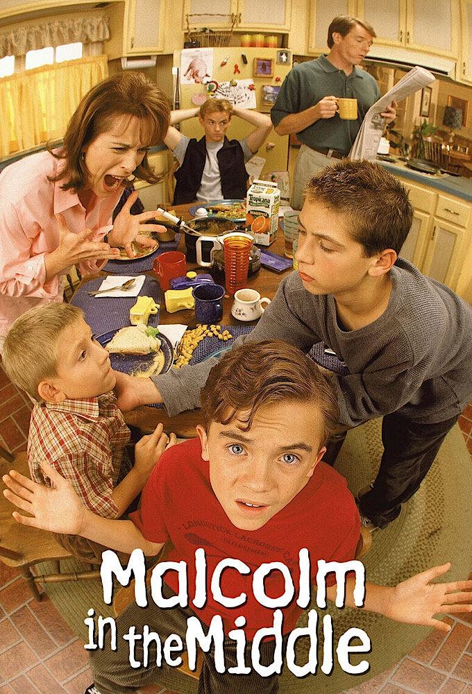
Married... with Children Evidencia 13
| Episodio Analizado | Pilot (S1E01) | Año / País | 1987 / Estados Unidos |
|---|---|---|---|
| Creador(es) | Michael G. Moye, Ron Leavitt | Cadena / Plataforma | Fox |
| Género | Sitcom familiar satírica | Duración aprox. | 23 minutos |
2. Contextualización
Fines de los ochenta. Primer gran éxito de la emergente cadena Fox. Relevancia: Operó como antítesis de las comedias domésticas perfectas.
3. Síntesis
El piloto retrata el hastío cínico del zapatero Al Bundy, contrastando su realidad con el optimismo ingenuo de sus vecinos recién casados.
4. Análisis Narrativo
Conflicto de desencanto y frustración cotidiana. Diálogos ácidos y repletos de sarcasmo corrosivo. Actuaciones intencionadamente grotescas.
5. Clasificación McKee
Familia. El hogar se retrata como el escenario de insatisfacción y la parodia ácida de la vida conyugal de clase media.
6. Vinculación Materia
Sitcom de contra-tendencia. Representa una flexibilización moral del humor televisivo hacia formas políticamente incorrectas.
7. Reflexión Crítica
Aunque fue pionera en romper la imagen perfecta del hogar norteamericano, hoy se percibe cínica, forzada y anticuada, evidenciando dinámicas de género que no envejecieron bien.
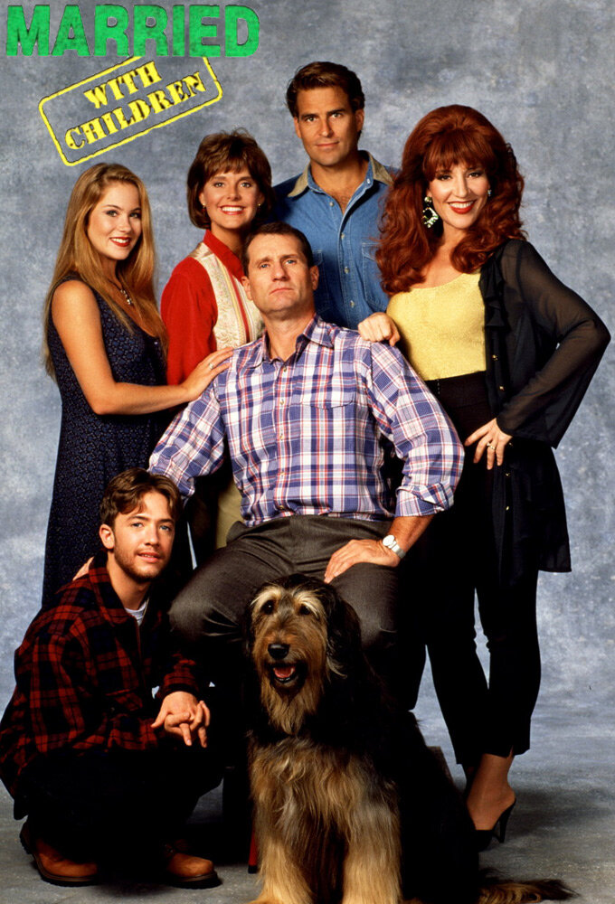
Arrested Development Evidencia 14
| Episodio Analizado | Pier Pressure (T1E10) | Año / País | 2004 / Estados Unidos |
|---|---|---|---|
| Creador(es) | Mitchell Hurwitz | Cadena / Plataforma | Fox / Netflix |
| Género | Comedia satírica | Duración aprox. | 22 minutos |
2. Contextualización
2004. Introdujo la narrativa autoconsciente e incómoda basada en la parodia de telerrealidad y un montaje frenético no apto para TV lineal.
3. Síntesis
Michael planea impartir una compleja lección moral a su hijo sobre las drogas, replicando torpemente los métodos absurdos de su propio padre.
4. Análisis Narrativo
Conflicto de mentiras encadenadas. Uso de cortes de salto, flashbacks breves y narrador omnisciente e irónico. Tono seco e incómodo.
5. Clasificación McKee
Familia. Parodia de las taras psicológicas y financieras que se heredan irónicamente de generación en generación.
6. Vinculación Materia
Comedia de autor de cámara única. Pionera en exigir atención y memoria acumulativa a una audiencia de nicho en televisión por cable.
7. Reflexión Crítica
Una comedia sumamente inteligente y cargada de ironía y referencias internas. Sin embargo, su tono frío dificulta la conexión emocional directa con su disfuncional red de personajes.
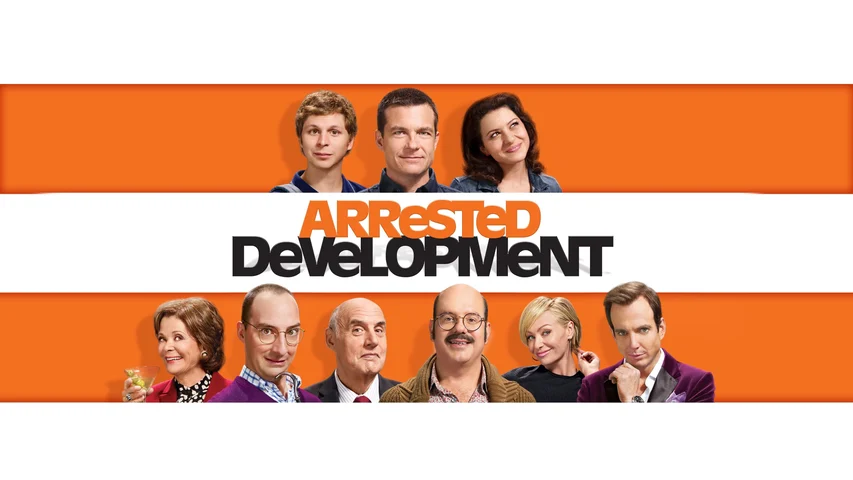
Bluey Evidencia 15
| Episodio Analizado | Sleepytime (T2E26) | Año / País | 2020 / Australia |
|---|---|---|---|
| Creador(es) | Joe Brumm | Cadena / Plataforma | ABC Kids / Disney+ |
| Género | Animación familiar | Duración aprox. | 7 minutos |
2. Contextualización
Fenómeno de la animación contemporánea. Éxito global al dotar de una doble lectura compleja el juego simbólico e infantil de la crianza.
3. Síntesis
Bingo transita por un sueño onírico espacial sobre planetas mientras persigue su meta real de dormir sola toda la noche.
4. Análisis Narrativo
Conflicto de maduración (aprender a soltar). Estructura poética y onírica. Uso dramático de la suite de Holst y la simbología del color.
5. Clasificación McKee
Familia. El relato se centra enteramente en el apego seguro y la calidez incondicional del núcleo parental en el crecimiento.
6. Vinculación Materia
Animación moderna de prestigio. Representa cómo un micro-formato televisivo puede albergar metáforas emocionales profundas.
7. Reflexión Crítica
Una obra de arte animada que trasciende edades. Sleepytime es poesía visual que relata con ternura el proceso de crecimiento e independencia emocional dentro del núcleo familiar.
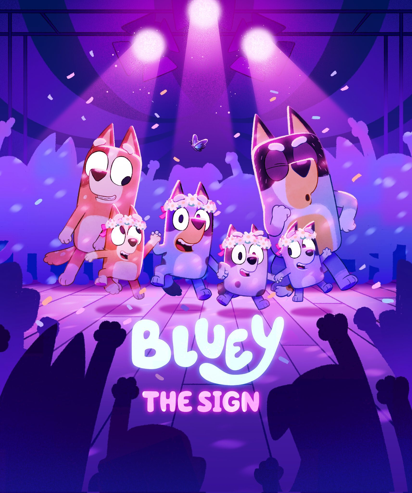
SECCIÓN 04
Amigos
Familia elegida, complicidad, límites y sentido de pertenencia dentro del grupo
2 Broke Girls Evidencia 18
| Episodio Analizado | Pilot (T1E01) | Año / País | 2011 / Estados Unidos |
|---|---|---|---|
| Creador(es) | Whitney Cummings y Michael Patrick King | Cadena / Plataforma | CBS / Max |
| Género | Sitcom / comedia de amistad | Duración aprox. | 22 minutos |
2. Contextualización
Sitcom multicámara de inicios de 2010 que combina público en vivo, escenarios fijos y remates directos con precariedad económica, servicio y amistad femenina.
3. Síntesis
Max conoce a Caroline en un diner de Brooklyn. Aunque desconfía de ella por su origen privilegiado, ambas terminan imaginando un negocio de cupcakes y una alianza posible.
4. Análisis Narrativo
El conflicto nace del choque de clase, experiencia y personalidad. La comedia surge de su contraste, pero el episodio ya deja ver complementariedad y apoyo mutuo.
5. Clasificación McKee
Amigos. Aunque hay trabajo y dinero de fondo, el centro emocional es el inicio de una amistad entre dos mujeres que terminan necesitándose.
6. Vinculación Materia
Ejemplo claro de sitcom multicámara con contraste de personajes y humor verbal, pero también con temas de clase social y trabajo precario en la vida urbana contemporánea.
7. Reflexión Crítica
Funciona porque no solo enfrenta dos estilos de vida: muestra cómo la amistad puede nacer justo donde antes parecía haber distancia, juicio y desconfianza.
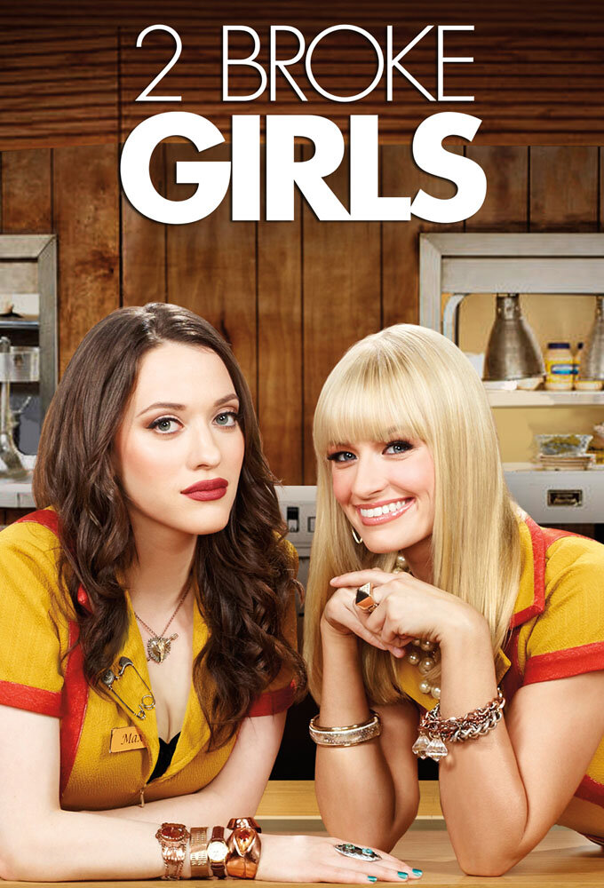
Shrinking Evidencia 19
| Episodio Analizado | Boop (T1E08) | Año / País | 2023 / Estados Unidos |
|---|---|---|---|
| Creador(es) | Bill Lawrence, Jason Segel y Brett Goldstein | Cadena / Plataforma | Apple TV+ |
| Género | Comedia dramática / amistad | Duración aprox. | 28 minutos |
2. Contextualización
Comedia dramática contemporánea que mezcla duelo, terapia, paternidad y amistad. Los amigos y colegas funcionan como red emocional que acompaña y confronta.
3. Síntesis
Alice actúa con más rebeldía y Jimmy no sabe cómo recuperar autoridad como padre. Paul y Brian intervienen para ayudarlo a poner límites sin romper el vínculo.
4. Análisis Narrativo
El conflicto no solo es familiar: revela que una amistad real también implica corregir, orientar y establecer límites cuando alguien está fallando.
5. Clasificación McKee
Amigos. El grupo funciona como comunidad de apoyo y corrección; no solo consuela a Jimmy, también lo empuja a asumir su responsabilidad.
6. Vinculación Materia
Comedia dramática coral de streaming donde humor y duelo coexisten. Muestra cómo una red de amistades puede sostener el desarrollo moral de los personajes.
7. Reflexión Crítica
Me gusta que la amistad aquí no sea complaciente: se siente más real porque apoyar a alguien también significa decirle cuándo se está equivocando.
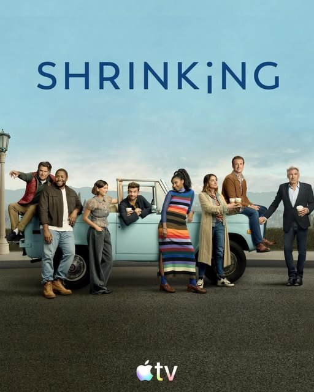
Seinfeld Evidencia 20
| Episodio Analizado | The Contest (T4E11) | Año / País | 1992 / Estados Unidos |
|---|---|---|---|
| Creador(es) | Larry David y Jerry Seinfeld | Cadena / Plataforma | NBC |
| Género | Sitcom / comedia de amigos | Duración aprox. | 22 minutos |
2. Contextualización
Sitcom clave de los noventa que convirtió asuntos cotidianos e incluso tabú en comedia sofisticada. Este episodio es uno de los más citados por su ingenio verbal y su impacto cultural.
3. Síntesis
Jerry, George, Elaine y Kramer hacen una apuesta para comprobar quién puede resistir más tiempo un impulso íntimo. La competencia vuelve cada escena más tensa, ridícula y reveladora.
4. Análisis Narrativo
El conflicto nace de una regla compartida y de la tentación individual de cada personaje. El capítulo usa elipsis, insinuación y repetición para sostener el humor sin decirlo todo de forma explícita.
5. Clasificación McKee
Amigos. No muestra amistad idealizada, sino un grupo que permanece unido pese a competir, incomodarse y pensar primero en sí mismo.
6. Vinculación Materia
Ejemplo claro de sitcom donde el diálogo y el subtexto reemplazan la explicación directa. También muestra cómo una serie de red podía empujar límites temáticos sin perder ligereza.
7. Reflexión Crítica
Me parece brillante porque convierte una idea mínima en una competencia memorable. El episodio demuestra que la comedia puede ser muy efectiva cuando confía en la insinuación y en el ritmo del grupo.
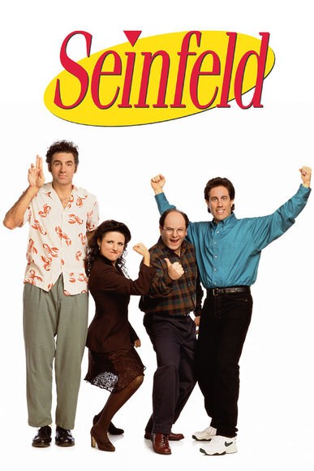
How I Met Your Mother Evidencia 21
| Episodio Analizado | Slap Bet (T2E09) | Año / País | 2006 / Estados Unidos |
|---|---|---|---|
| Creador(es) | Carter Bays y Craig Thomas | Cadena / Plataforma | CBS |
| Género | Sitcom / comedia romántica y de amigos | Duración aprox. | 22 minutos |
2. Contextualización
Actualiza la sitcom de amigos con flashbacks, relato retrospectivo y running gags. Este episodio es clave por crear Robin Sparkles y la slap bet.
3. Síntesis
Robin evita ir al centro comercial y el grupo intenta descubrir su secreto. La investigación deriva en la revelación de Robin Sparkles y en una nueva apuesta ritual.
4. Análisis Narrativo
El grupo transforma un secreto privado en código compartido. La curiosidad, las bromas internas y las reglas inventadas refuerzan la identidad colectiva.
5. Clasificación McKee
Amigos. Todo depende de la dinámica grupal: curiosidad, competencia, juego, memoria compartida y capacidad de volver ritual una broma.
6. Vinculación Materia
Sitcom de amigos contemporánea con serialización ligera. Crea elementos que sobreviven muchas temporadas y fortalecen la continuidad emocional del grupo.
7. Reflexión Crítica
Funciona muy bien porque convierte un detalle mínimo en mito interno del grupo. La slap bet y Robin Sparkles quedan como memoria colectiva, no solo como chiste aislado.
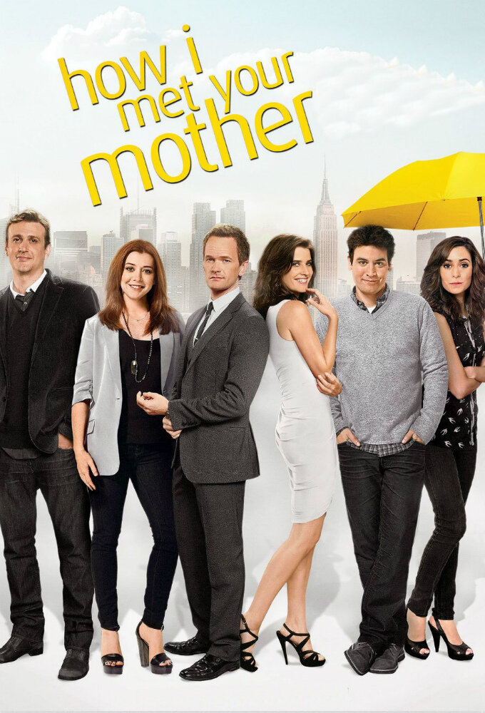
SECCIÓN 05
Trabajo
Instituciones, oficio, creatividad y desgaste profesional como motores centrales del conflicto dramático
Ted Lasso: Rainbow Evidencia 16
| Episodio Analizado | Rainbow (T2E05) | Año / País | 2021 / Estados Unidos - Reino Unido |
|---|---|---|---|
| Creador(es) | J. Sudeikis, B. Lawrence, B. Hunt | Cadena / Plataforma | Apple TV+ |
| Género | Comedia dramática | Duración aprox. | 38 minutos |
2. Contextualización
Lanzada en pandemia, la serie se volvió un referente de la comedia optimista del streaming. Este episodio destaca por unir deporte, liderazgo y sentido de comunidad laboral.
3. Síntesis
Isaac busca recuperar confianza como capitán, mientras Roy Kent enfrenta la decisión de volver al club en un nuevo rol profesional.
4. Análisis Narrativo
El conflicto gira alrededor del rol, la pertenencia y la utilidad dentro del equipo. La estructura convierte el regreso de Roy en el punto de resolución emocional y laboral.
5. Clasificación McKee
Trabajo. Todo el episodio se organiza desde el club, el rendimiento, el liderazgo y la redefinición profesional de quienes trabajan dentro del equipo.
6. Vinculación Materia
Comedia dramática de streaming que flexibiliza arquetipos masculinos tradicionales y muestra cómo el espacio laboral también puede producir vínculos emocionales complejos.
7. Reflexión Crítica
Me gusta porque el deporte no aparece solo como espectáculo, sino como un espacio de trabajo donde el liderazgo, la confianza y el sentido de pertenencia cambian la vida de los personajes.
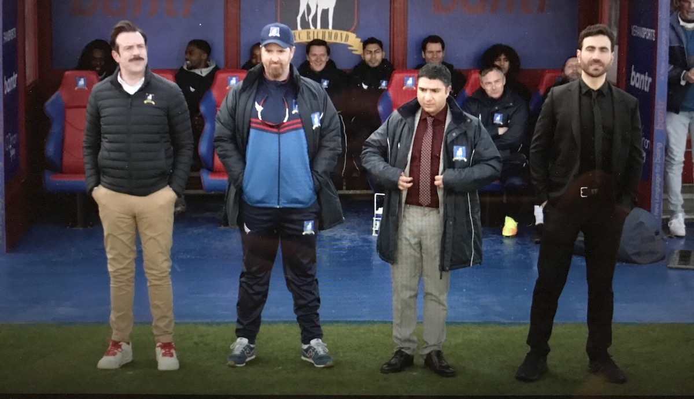
Ted Lasso: Sunflowers Evidencia 17
| Episodio Analizado | Sunflowers (T3E06) | Año / País | 2023 / Estados Unidos - Reino Unido |
|---|---|---|---|
| Creador(es) | J. Sudeikis, B. Lawrence, B. Hunt | Cadena / Plataforma | Apple TV+ |
| Género | Comedia dramática | Duración aprox. | 63 minutos |
2. Contextualización
Forma parte de la etapa madura de la serie y demuestra que una producción deportiva puede detenerse para explorar el cansancio, la libertad y la introspección de su equipo de trabajo.
3. Síntesis
Durante una noche libre en Ámsterdam, cada integrante del equipo vive una experiencia distinta que lo ayuda a replantear deseos, miedos y decisiones personales.
4. Análisis Narrativo
El capítulo desacelera la trama principal para mostrar conflictos internos. Aunque parece una pausa, fortalece la continuidad emocional del grupo y del entorno profesional.
5. Clasificación McKee
Trabajo. El viaje existe porque forma parte de la dinámica del club y del desgaste que implica convivir, competir y sostener responsabilidades profesionales.
6. Vinculación Materia
Muestra una narrativa coral de streaming donde el espacio, la atmósfera y el ritmo lento sirven para profundizar personajes sin abandonar el mundo laboral que los reúne.
7. Reflexión Crítica
Me gusta mucho porque demuestra que una historia de trabajo no siempre necesita crisis directas: también puede crecer desde momentos de pausa, cuidado y redescubrimiento personal.
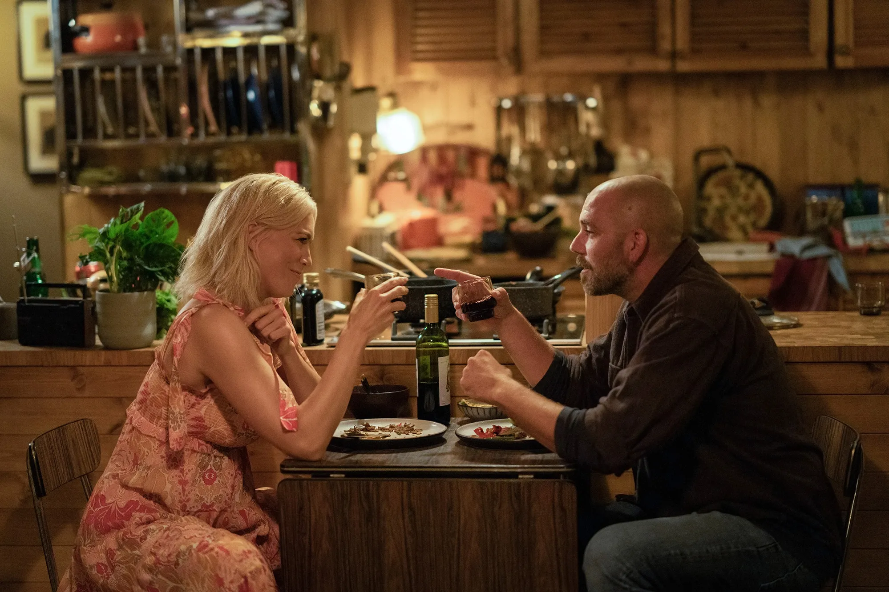
ER Evidencia 22
| Episodio Analizado | Be Still My Heart (T6E13) | Año / País | 2000 / Estados Unidos |
|---|---|---|---|
| Creador(es) | Michael Crichton | Cadena / Plataforma | NBC |
| Género | Drama médico | Duración aprox. | 45 minutos |
2. Contextualización
Año 2000. Cúspide de la televisión abierta comercial. Redefinió formalmente el drama médico mediante un ritmo asombroso de cámara en movimiento constante.
3. Síntesis
Bajo la presión de San Valentín, Carter y Lucy atienden a un paciente psiquiátrico en urgencias. La jornada culmina en un shock de agresión inesperado.
4. Análisis Narrativo
Conflicto de supervivencia ante el agotamiento y la locura. Ritmo frenético de planos secuencia continuos (*Steadicam*). Lenguaje y tecnicismo médico absoluto.
5. Clasificación McKee
Trabajo. El hospital opera como el único ecosistema regente; la presión extenuante anula temporalmente la esfera afectiva.
6. Vinculación Materia
Consolidación del drama profesional médico clásico. Representa la madurez y espectacularidad del medio en la era previa a la fragmentación digital.
7. Reflexión Crítica
Un drama médico intenso que transita de la rutina cotidiana al shock total. Demuestra de manera realista cómo la sala de urgencias mezcla dilemas morales, técnicos y de vida.
The Pitt Evidencia 23
| Episodio Analizado | 6:00 P.M. (T1E12) | Año / País | 2025 / Estados Unidos |
|---|---|---|---|
| Creador(es) | R. Scott Gemmill | Cadena / Plataforma | Max (HBO Max) |
| Género | Drama médico | Duración aprox. | 41 minutos |
2. Contextualización
2025. Actualiza el drama médico de alta fidelidad técnica uniendo la crudeza social post-pandémica con la inmediatez del consumo en streaming.
3. Síntesis
Una saturación crítica y masiva desborda las urgencias del hospital mientras los suministros se agotan, exigiendo triajes límite.
4. Análisis Narrativo
Conflicto de triaje y saturación sistémica. Estructura inmersiva casi en tiempo real. Puesta en escena hiperrealista y exenta de melodrama convencional.
5. Clasificación McKee
Trabajo / Temas Actuales. Expone directamente el *burnout* (desgaste profesional) y el colapso financiero del sistema de salud actual.
6. Vinculación Materia
Drama profesional en streaming. Muestra la vigencia del drama hospitalario para construir relatos críticos de inmersión total en la TV contemporánea.
7. Reflexión Crítica
Un relato de inmersión total sin respiro. Expone de manera cruda el desgaste médico real y la saturación sistémica actual, haciendo de cada decisión un asunto urgente.
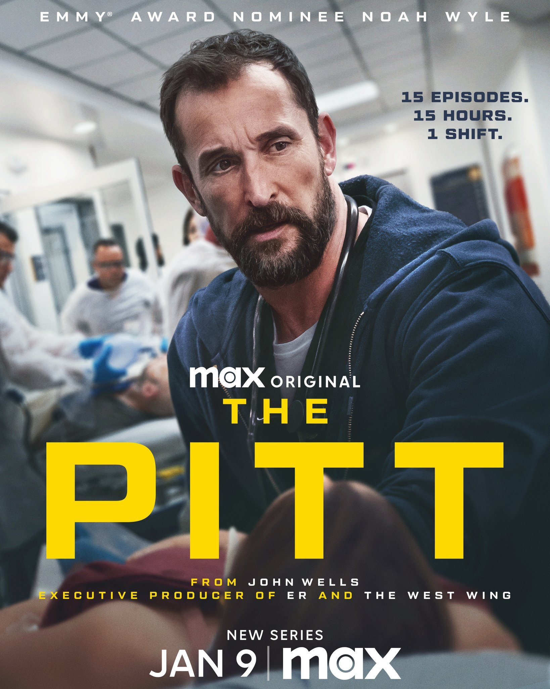
Mindhunter Evidencia 24
| Episodio Analizado | Episode 10 (T1E10) | Año / País | 2017 / Estados Unidos |
|---|---|---|---|
| Creador(es) | Joe Penhall | Cadena / Plataforma | Netflix |
| Género | Thriller psicológico / drama criminal | Duración aprox. | 60 minutos |
2. Contextualización
Serie de prestigio del streaming que privilegia la investigación psicológica sobre la acción policial tradicional y sitúa el origen de la perfilación criminal dentro del FBI setentero.
3. Síntesis
Holden y Bill interrogan a Gene Devier mientras la Unidad de Ciencias del Comportamiento enfrenta revisión interna. El aparente triunfo del caso desemboca en crisis tras el reencuentro con Kemper.
4. Análisis Narrativo
Conflicto entre eficacia profesional y costo psicológico. Holden manipula con empatía fingida y lectura conductual, pero descubre que su método también lo expone emocionalmente.
5. Clasificación McKee
Trabajo. El conflicto nace de investigar, perfilar, interrogar y rendir cuentas dentro de una institución que exige resultados verificables.
6. Vinculación Materia
Drama profesional seriado de streaming que construye tensión desde la psicología, el silencio y la transformación interna del personaje, no desde la acción física convencional.
7. Reflexión Crítica
La serie no romantiza la perfilación criminal: la presenta como un trabajo intelectualmente brillante pero mentalmente corrosivo para quien lo lleva al límite.
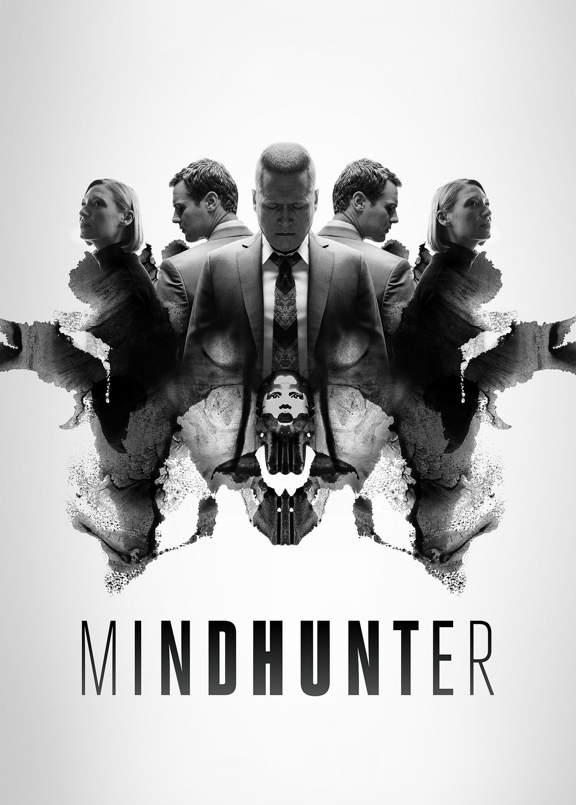
Datos complementarios
Holden empieza seguro por los resultados del interrogatorio a Gene Devier, pero termina rebasado emocionalmente. Aunque sus métodos psicológicos le dan información útil, también cruzan límites éticos porque manipula al sospechoso. El encuentro con Kemper muestra que Holden no controla tanto la relación como cree: Kemper también lo ha estudiado y lo afecta emocionalmente. Los primeros planos, los pasillos cerrados, la luz fría y los silencios reflejan su ansiedad. Es una historia de trabajo porque todo surge de su labor dentro del FBI y del costo psicológico de investigar asesinos.
Law & Order: SVU Evidencia 25
| Episodio Analizado | Her Negotiation (T14E24) | Año / País | 2013 / Estados Unidos |
|---|---|---|---|
| Creador(es) | Dick Wolf | Cadena / Plataforma | NBC |
| Género | Drama policial y legal | Duración aprox. | 39 a 43 minutos |
2. Contextualización
Drama procedimental televisivo que combina investigación, víctimas, fiscalía y proceso judicial. Este episodio destaca porque rompe el caso cerrado y vuelve íntima la amenaza.
3. Síntesis
Rollins detiene a William Lewis, pero la evidencia no basta para retenerlo. Mientras la unidad intenta probar su peligrosidad, él explota las reglas del sistema para acercarse a Benson.
4. Análisis Narrativo
El conflicto enfrenta intuición policial contra exigencia de prueba legal. Cada diálogo puede convertirse en evidencia, error procesal o ventaja jurídica para el antagonista.
5. Clasificación McKee
Trabajo. La historia depende de investigar, interrogar, reunir evidencia y responder a los límites del debido proceso dentro de la policía y la fiscalía.
6. Vinculación Materia
Ejemplo de procedimental que se vuelve trama seriada mediante cliffhanger. La estructura laboral del caso se transforma en amenaza íntima sin abandonar su lógica institucional.
7. Reflexión Crítica
El episodio demuestra que sospechar no basta cuando faltan pruebas. La tensión surge porque el sistema protege derechos esenciales, pero también puede darle margen a un agresor calculador.
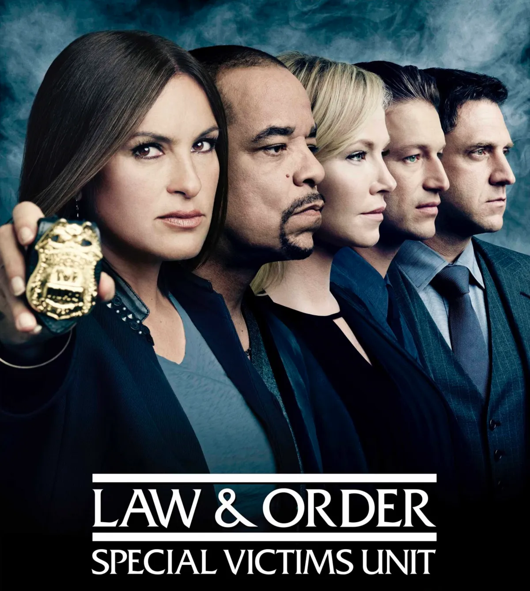
Datos complementarios
El episodio enfrenta la intuición policial con la falta de pruebas legales. Benson y Rollins saben que William Lewis es peligroso, pero no pueden detenerlo solo por sospechas. Lewis aprovecha la duda razonable y las garantías judiciales para protegerse, lo que lo vuelve un antagonista cada vez más amenazante. El cliffhanger final en el departamento de Benson convierte un caso policial en un peligro personal. Es una historia de trabajo porque depende de investigar, reunir evidencia y actuar dentro de las reglas del sistema legal.
Mad Men Evidencia 26
| Episodio Analizado | The Suitcase (T4E07) | Año / País | 2010 / Estados Unidos |
|---|---|---|---|
| Creador(es) | Matthew Weiner | Cadena / Plataforma | AMC |
| Género | Drama de época / drama laboral | Duración aprox. | 48 minutos |
2. Contextualización
Serie clave del drama de prestigio en cable. A través de la publicidad sesentera explora identidad, consumo, jerarquías laborales, género y desgaste emocional.
3. Síntesis
Don obliga a Peggy a quedarse hasta tarde por la campaña de Samsonite. La jornada deriva en discusiones, confesiones y una confrontación emocional que rebasa lo profesional.
4. Análisis Narrativo
El conflicto aparente es creativo, pero el verdadero es emocional: Don evita el duelo por Anna y Peggy exige reconocimiento dentro de una relación laboral desigual.
5. Clasificación McKee
Trabajo. La agencia, el plazo de la campaña y la jerarquía jefe-empleada activan el conflicto y hacen emerger las heridas privadas de los personajes.
6. Vinculación Materia
Drama laboral contemporáneo y serie de prestigio que usa pocos personajes, diálogos largos y espacio cerrado para profundizar en identidad profesional y dolor personal.
7. Reflexión Crítica
El trabajo aquí es apenas la puerta de entrada a algo más íntimo. La “maleta” funciona como metáfora del equipaje emocional que Don y Peggy cargan.

Datos complementarios
El conflicto aparente es terminar una campaña de Samsonite, pero el verdadero conflicto es emocional. Don evita enfrentar la muerte de Anna Draper, mientras Peggy busca ser reconocida como profesional. Durante la noche, Peggy confronta a Don y él deja ver una vulnerabilidad que normalmente oculta. La maleta representa tanto la campaña como el equipaje emocional que ambos cargan. Es una historia de trabajo porque la agencia, el plazo y la relación jefe-empleada provocan toda la transformación de los personajes.
The Bear Evidencia 27
| Episodio Analizado | Forks / Tenedores (T2E07) | Año / País | 2023 / Estados Unidos |
|---|---|---|---|
| Creador(es) | Christopher Storer | Cadena / Plataforma | FX / Hulu |
| Género | Comedia dramática / drama laboral | Duración aprox. | 35 minutos |
2. Contextualización
Serie contemporánea sobre cocina, presión, trabajo y vínculos humanos dentro de un restaurante. “Forks” destaca porque pausa la trama coral para profundizar en Richie.
3. Síntesis
Carmy envía a Richie a entrenarse en un restaurante de alta cocina antes de abrir The Bear. Lo que empieza como humillación termina convirtiéndose en aprendizaje y propósito.
4. Análisis Narrativo
El conflicto externo exige adaptarse a un entorno laboral preciso; el interno expone a un hombre perdido y poco valorado. La transformación se cuenta a través de hábitos, conducta y servicio.
5. Clasificación McKee
Trabajo. Richie reconstruye su identidad mediante disciplina, jerarquías, entrenamiento y responsabilidad profesional dentro del restaurante.
6. Vinculación Materia
Episodio centrado en personaje dentro de una serie coral. Usa montaje, música, encuadres de detalle y estética cinematográfica para mostrar el cambio emocional desde las acciones.
7. Reflexión Crítica
El episodio resignifica a Richie sin volverlo otro personaje. Algo tan simple como limpiar tenedores termina simbolizando disciplina, respeto y posibilidad de recomenzar.
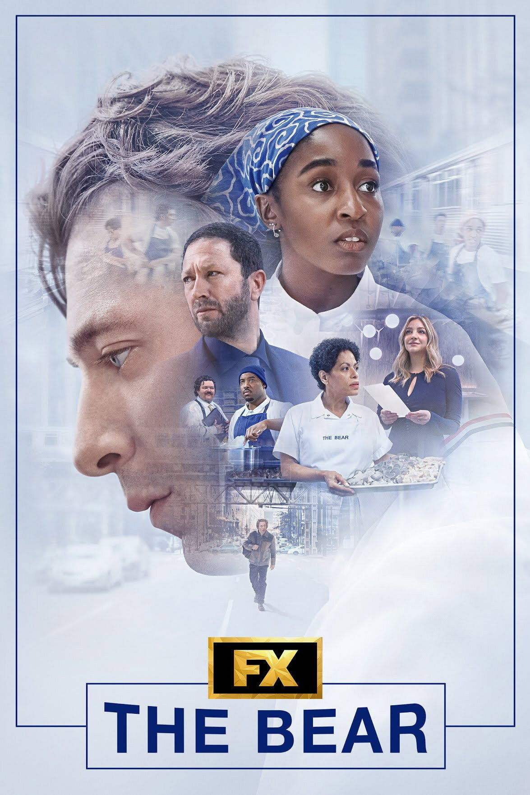
Datos complementarios
En “Forks”, The Bear rompe momentáneamente con su estructura coral para concentrarse casi por completo en Richie y mostrar una transformación individual. Al principio llega tarde, se burla de las reglas y ve como humillación tener que limpiar tenedores; después empieza a observar, hacer preguntas, cuidar su presentación y entender que cada detalle del servicio importa. El tenedor se vuelve simbólico porque pasa de representar una tarea inútil a representar disciplina, respeto y propósito. La cultura del restaurante, basada en orden, precisión, comunicación y atención al cliente, le permite descubrir que su capacidad para conectar con las personas puede ser una fortaleza. El episodio también refleja la evolución de las series actuales: se centra en un personaje, usa montaje, música, encuadres detallados y estética cinematográfica, y muestra el cambio emocional de Richie mediante acciones más que explicaciones.
SECCIÓN 06
Temas actuales
Tecnología, validación digital y desigualdad simbólica como formas contemporáneas de control social
Adolescence Evidencia 28
| Episodio Analizado | Episode 3 (T1E03) | Año / País | 2025 / Reino Unido |
|---|---|---|---|
| Creador(es) | Stephen Graham y Jack Thorne | Cadena / Plataforma | Netflix |
| Género | Drama criminal / thriller psicológico | Duración aprox. | 52 minutos |
2. Contextualización
Miniserie británica contemporánea sobre violencia juvenil, masculinidad, redes sociales y responsabilidad familiar. Destaca por filmar cada episodio en un solo plano secuencia.
3. Síntesis
Jamie se reúne con la psicóloga Briony Ariston para una evaluación. La conversación pasa de un control aparente a un enfrentamiento emocional que revela inseguridad, enojo y misoginia.
4. Análisis Narrativo
El conflicto nace del duelo verbal entre Jamie y Briony. Diálogos, silencios y cambios de actitud sostienen la tensión mientras el plano secuencia obliga a vivir la sesión en tiempo real.
5. Clasificación McKee
Temas actuales. Violencia juvenil, misoginia, masculinidad tóxica, redes sociales, salud mental y responsabilidad social se cruzan en un problema contemporáneo amplio.
6. Vinculación Materia
Narrativa centrada en personaje con estética cinematográfica basada en plano secuencia, tensión en tiempo real y storytelling emocional construido desde reacciones y pausas.
7. Reflexión Crítica
Es un episodio durísimo porque casi todo ocurre en una sola conversación y nunca pierde fuerza. Jamie cambia de vulnerable a amenazante sin dejar escapar al espectador de la incomodidad.
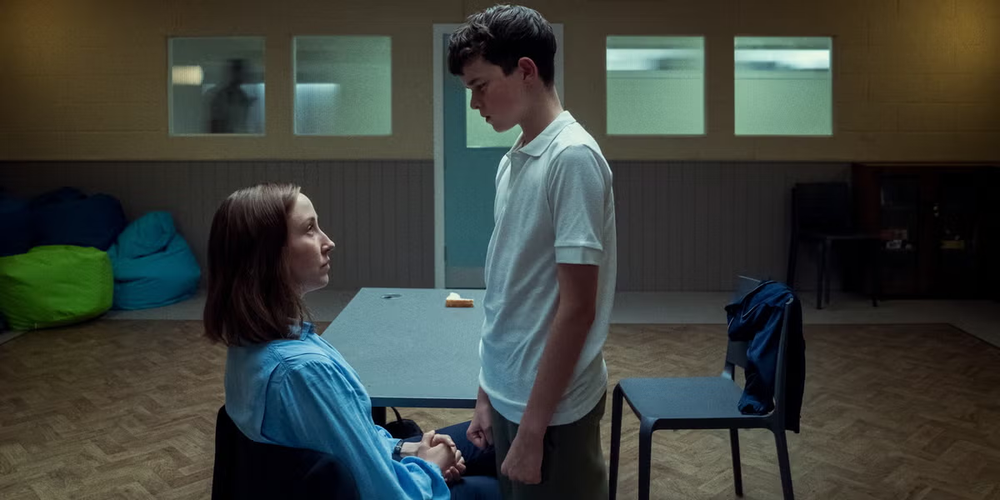
Datos complementarios
El episodio rompe con una estructura tradicional porque prácticamente deja de lado a los demás personajes y se concentra solo en Jamie y Briony. La conversación funciona como una especie de duelo psicológico: Briony intenta mantener el control profesional, pero Jamie cambia entre vulnerabilidad, enojo y manipulación. El plano secuencia hace que el espectador viva todo en tiempo real, sin cortes que disminuyan la tensión. También es importante que la serie no explique completamente a Jamie como si hubiera una respuesta simple. Sus comentarios sobre Katie, las mujeres, la popularidad y el rechazo muestran que su violencia está relacionada con inseguridad, resentimiento y una visión distorsionada de las relaciones. El episodio hace que el espectador se sienta incómodo porque obliga a observar a un personaje que puede parecer un niño vulnerable, pero también alguien capaz de intimidar y causar daño.
Black Mirror: Nosedive Evidencia 29
| Episodio Analizado | Nosedive (T3E01) | Año / País | 2016 / Reino Unido |
|---|---|---|---|
| Creador(es) | Charlie Brooker | Cadena / Plataforma | Netflix |
| Género | Ciencia ficción / sátira social | Duración aprox. | 63 minutos |
2. Contextualización
Episodio antológico representativo del streaming por combinar una idea tecnológica con crítica social directa sobre imagen, estatus y acceso desigual a oportunidades.
3. Síntesis
Lacie busca elevar su calificación social para acceder a una vivienda exclusiva. Una cadena de tropiezos destruye su puntuación y la obliga a enfrentar quién es sin aprobación externa.
4. Análisis Narrativo
El conflicto opone imagen perfecta contra identidad real. El episodio muestra una sociedad donde cada gesto es evaluado y la vida social se convierte en actuación permanente.
5. Clasificación McKee
Temas actuales. Redes sociales, validación digital, clasismo y cultura de la imagen se vuelven sistema de control social y filtro de oportunidades.
6. Vinculación Materia
Serie antológica contemporánea que demuestra cómo una sola entrega cerrada puede construir una distopía visualmente ambiciosa con comentario social muy concentrado.
7. Reflexión Crítica
Resulta incómodo porque exagera algo ya real: la necesidad de parecer feliz, exitosa y aceptable para merecer mejores oportunidades. Su final libera y castiga al mismo tiempo.
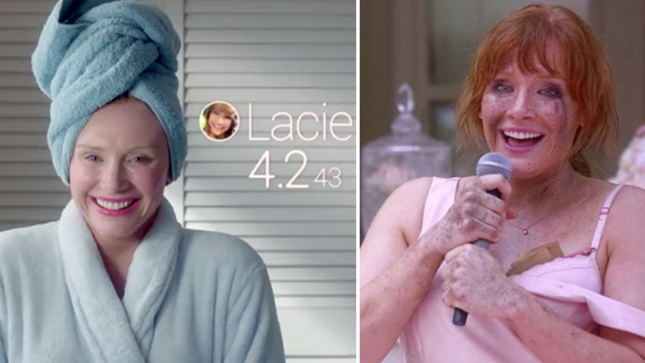
Conclusión del portafolio
Este portafolio permitió analizar cómo las series han evolucionado en sus formas de narrar, desde las sitcoms clásicas hasta las producciones actuales de streaming. A lo largo de los bloques se identificaron cambios en la estructura, el uso del cliffhanger, la construcción de personajes, el montaje, el sonido, la tecnología y la estética visual. También se hizo visible que temas como familia, amistad, trabajo, poder y violencia siguen presentes, pero se representan de manera distinta según la época, la industria y el formato de cada serie.
En conjunto, las evidencias muestran que la televisión no solo busca entretener, sino también reflejar conflictos sociales, emocionales y culturales. Algunas series construyen humor desde lo cotidiano; otras trabajan la tensión desde la política, el suspenso, la psicología o el entorno laboral. El análisis me permitió relacionar los bloques entre sí y entender que cada decisión audiovisual, desde una toma hasta un silencio o un final abierto, modifica la forma en que el espectador interpreta la historia y se involucra con ella.
Reflexión personal sobre la materia
La materia me gustó porque me hizo ver las series de una forma diferente. Antes las veía más como entretenimiento, pero ahora puedo identificar mejor cuándo una escena usa el diálogo, el montaje, la música, la cámara o el espacio para generar una emoción o para construir un conflicto. También me ayudó a entender por qué algunas series conectan más conmigo que otras, aunque todas tengan algo importante que aportar dentro de la evolución de la televisión.
Las series que más me gustaron fueron It’s All Her Fault, The Newsroom, This Is Us, Malcolm in the Middle, The Bear y Bluey, porque me atraparon desde la tensión, la emoción o la nostalgia, y además me dejaron ver con más claridad cómo una serie puede construir sentido desde sus personajes y sus recursos audiovisuales. Me gustaría seguir viendo It’s All Her Fault para saber qué ocurrió con el niño, This Is Us porque conecté mucho con la historia de la familia Pearson y The Bear porque me gustó mucho la transformación de Richie. Al final me quedo con la idea de que una buena serie puede hacerte reír, incomodar o emocionarte, pero también hacerte pensar en las personas, en los conflictos de su tiempo y en la forma en que se cuentan esas experiencias.
FIN DE LA EVALUACIÓN
Fuentes consultadas
Referencias de series y episodios
- Las referencias APA 7 de cada evidencia se colocaron dentro de la lámina correspondiente para mantener identificable cada episodio analizado.
- Para verificar temporadas, capítulos, sinopsis y datos básicos se consultaron páginas oficiales o catálogos de plataforma como NBC, Netflix, Apple TV+, FX, Max, Peacock y CBS.
- En títulos clásicos y catálogos históricos también se contrastó la información con guías de episodios y fichas de emisión ampliamente usadas en investigación televisiva.
Créditos de imágenes
- NBC / NBCUniversal: The West Wing, ER y Law & Order: SVU a partir de material promocional y páginas oficiales de la cadena.
- Netflix / Tudum: House of Cards, Mindhunter, Adolescence y Black Mirror mediante arte promocional, stills y materiales editoriales oficiales.
- Apple TV+ / Apple TV Press: Ted Lasso y Shrinking con imágenes promocionales y unit photography de prensa.
- FX / Hulu: The Bear con material promocional oficial de la serie.
- HBO Max: The Pitt con póster e imagen promocional oficial.
- Peacock / NBC Insider: It’s All Her Fault mediante tráiler oficial, materiales promocionales y ficha de reparto.
- CBS, ABC, Disney, BBC Studios y archivos promocionales: Friends, How I Met Your Mother, 2 Broke Girls, I Love Lucy, The Dick Van Dyke Show, Seinfeld, Malcolm in the Middle, Married... with Children, Arrested Development, Bluey y otros títulos de catálogo o difusión televisiva.
Crédito general: todas las imágenes se usan con fines exclusivamente académicos y de análisis audiovisual dentro de este portafolio universitario. Cuando no existió ficha editorial específica por episodio en el material disponible, se acreditó a la plataforma, cadena o estudio responsable de la difusión promocional de la serie.